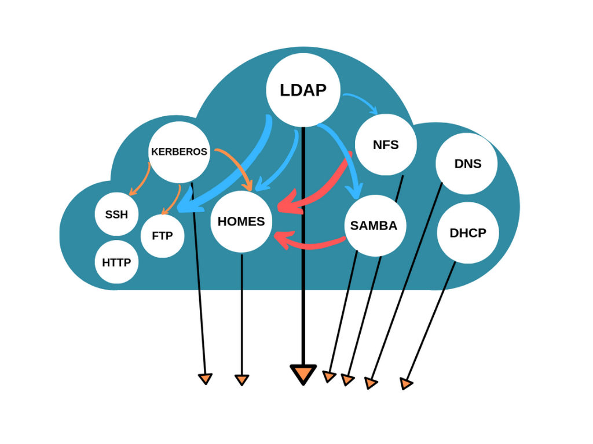
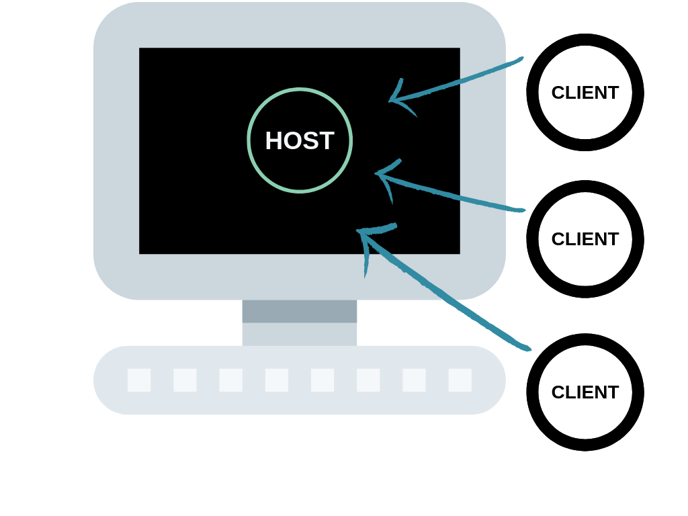

Part Pràctica

Èric Escribà
ESTRUCTURA INFORMÀTICA (servidors,clients)
SCRIPTING (alta i baixa usuaris/grups)
Lloc de treball
Eficient i reutilitzable
Automatització de tasques


dn: dc=edt,dc=org
dc: edt
description: Escola del treball de Barcelona
objectClass: dcObject
objectClass: organization
o: edt.orgdn: ou=usuaris,dc=edt,dc=org
ou: usuaris
description: Container per usuaris del sistema linux
objectClass: organizationalunit
dn: ou=grups,dc=edt,dc=org
ou: groups
ou: grups
description: Container per a grups
objectClass: organizationalunitdn: uid=pere,ou=usuaris,dc=edt,dc=org
objectClass: posixAccount
objectClass: inetOrgPerson
cn: Pere Pou
sn: Pou
homePhone: 555-222-2221
mail: pere@edt.org
description: Watch out for this guy
ou: test
uid: pere
uidNumber: 1002
gidNumber: 200
loginShell: /bin/bash
homeDirectory: /home/grups/test/pere
userPassword:: e1NTSEF9Z2htdFJMMTFZdFhvVWhJUDd6NmY3bmI4UkNOYWRGZSs=
dn: cn=test,ou=grups,dc=edt,dc=org
cn: test
gidNumber: 200
description: Grup d'usuaris de proves
memberUid: pere
memberUid: anna
memberUid: marta
memberUid: pau
objectClass: posixGroupUsuari operador com a administrador.
Definició permisos administrador
access to * by dn.exact="uid=operador,ou=usuaris,dc=edt,dc=org" manage by self write by * readGRUPS PREDEFINITS
dn: cn=admin,ou=grups,dc=edt,dc=org
dn: cn=hosts,ou=grups,dc=edt,dc=org
dn: cn=profes,ou=grups,dc=edt,dc=org
dn: cn=test,ou=grups,dc=edt,dc=org
dn: cn=wiaw1,ou=grups,dc=edt,dc=org
dn: cn=wiaw2,ou=grups,dc=edt,dc=org
dn: cn=hisx1,ou=grups,dc=edt,dc=org
dn: cn=hisx2,ou=grups,dc=edt,dc=org
dn: cn=wiam1,ou=grups,dc=edt,dc=orgProveïdor d’autenticació (Autenticaction Provider)
Emmagatzema i gestiona els passwords dels usuaris. Principals
nom/instància@regne
operador@EDT.ORG *Zona d’emmagatzematge dels homes dels usuaris.
Connectivitat amb els servidors
Volum de dades
VOLUME /homeEncarregat de fer el montatge possible.
Usuaris samba
echo -e "operador\noperador" | smbpasswd -a operadorEXEMPLE
[iamuser60@shost ~]$ df -h
Filesystem Size Used Avail Use% Mounted on
overlay 370G 125G 227G 36% /
tmpfs 64M 0 64M 0% /dev
tmpfs 3.9G 0 3.9G 0% /sys/fs/cgroup
/dev/sda5 370G 125G 227G 36% /etc/hosts
shm 64M 0 64M 0% /dev/shm
//samba/iamuser60 370G 144G 227G 39% /home/grups/wiam2/iamuser60/iamuser60/usr/sbin/smbd && echo "smb Ok"
/usr/sbin/nmbd && echo "nmb Ok"
/usr/sbin/sshd -D/etc/exports
/home/grups 192.168.2.0/16(rw,sync,root_squash)/home/grups/hisx1 192.168.3.0/16(rw,sync,root_squash)
/home/grups/hisx2 192.168.2.0/16(rw,sync,root_squash)
/home/grups/wiam1 192.168.4.0/16(rw,sync,root_squash)
/home/grups/wiam2 192.168.5.0/16(rw,sync,root_squash)
/home/grups/wiaw1 192.168.6.0/16(rw,sync,root_squash)
/home/grups/wiaw2 192.168.7.0/16(rw,sync,root_squash)
/home/grups/profes 192.168.10.0/16(rw,sync,root_squash)Encarregats de resoldre i donar identitat.
Tot fa referència a gandhi.
Configurats per actuar envers el host 192.168.2.44
gandhi IN A 192.168.2.44
dns CNAME gandhi
dhcp CNAME gandhi
ldap CNAME gandhi
kserver CNAME gandhi
homes CNAME gandhi
samba CNAME gandhi
nfs CNAME gandhi
ssh CNAME gandhi
http CNAME gandhidocker-compose.yml.docker-compose up -d
EXEMPLE
Creating network "dockers_gandhi-net" with the default driver
Creating dns.edt.org ...
Creating dns.edt.org ... done
Creating dhcp.edt.org ...
Creating dhcp.edt.org ... done
Creating ldap.edt.org ...
Creating ldap.edt.org ... done
Creating kserver.edt.org ...
Creating kserver.edt.org ... done
Creating homes.edt.org ...
Creating homes.edt.org ... done
Creating samba.edt.org ...
Creating samba.edt.org ... done
Creating nfs.edt.org ...
Creating nfs.edt.org ... done
Creating sshd.edt.org ...
Creating sshd.edt.org ... done
Creating http.edt.org ...
Creating http.edt.org ... done2 CLIENTS: nfs i samba
Representació en docker i en físic
Format /etc/passwd
Per tenir un compte d’usuari actiu i que funcioni correctament, fan falta 4 passos:
CREACIÓ COMPTE USUARI A LDAP
CREACIÓ PRINCIPAL KERBEROS
CREACIÓ COMPTE SAMBA
CREACIÓ HOME
Scripts a prova de:
Una mala connexió amb LDAP
Usuari existent a LDAP / Usuari inexistent
L’usuari no té un grup existent a LDAP
La línia d’usuari està mal escrita
Format /etc/group.
Per crear un grup correctament fan falta fer 2 pasos:
CREACIÓ GRUP AL SERVIDOR LDAP
CREACIÓ DIRECTORI GRUP
Scripts a prova de:
Una mala connexió amb el servidor LDAP
El grup ja està en el servidor LDAP / No està
La línia del grup està mal escrita
Grup contè usuaris